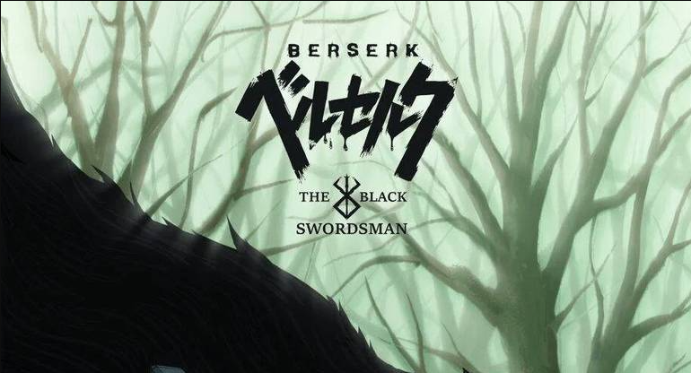

Confira a Notícia:
O Studio Eclypse revelou recentemente um pôster oficial do anime Berserk: The Black Swordsman. Trata-se de uma animação de fã que adapta o Arco do Espadachim Negro, do mangá Berserk. Berserk é uma série de mangá escrita e ilustrada por Kentaro Miura. Situada em um mundo de fantasia sombria inspirado na Europa medieval, a história gira em torno do solitário Guts, um ex-mercenário e agora um espadachim amaldiçoado e forçado a vagar sem descanso para sobreviver e buscar vingança, e Griffith, o líder de um bando de mercenários chamado de “Bando do Falcão”.
Temas de isolamento, traição, a ilusão do livre-arbítrio, autopreservação, e a questão de se a humanidade é fundamentalmente boa ou má permeiam a história, explorando o melhor e o pior lado da natureza humana.
A obra de Kentaro Miura começou a ser serializada em 1989. Desde 1992, a serialização ocorre na revista Young Animal. No Brasil, o título é publicado pela Panini. Em setembro, Berserk ultrapassou 60 milhões de cópias em circulação mundialmente, incluindo cópias digitais.